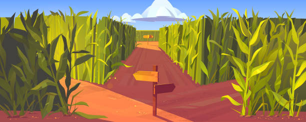
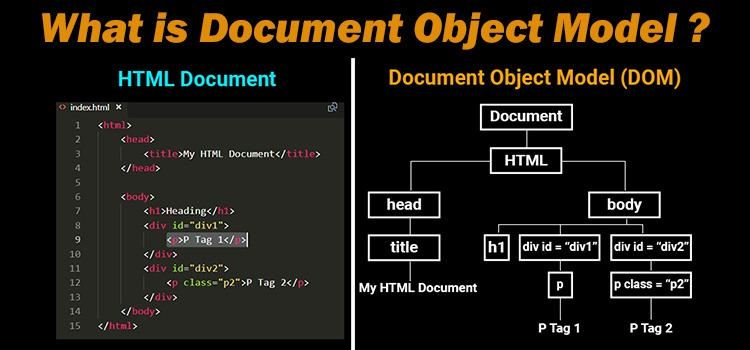
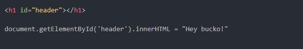
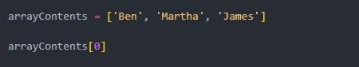
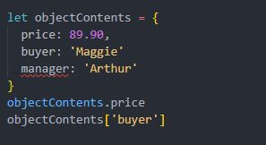
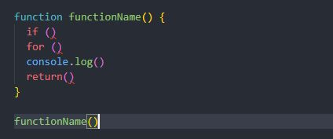

What is Javascript, HTML, and CSS?
The best analogy I have to describe HTML and CSS is by equating them to my most favourite addictive substance in the entire world…Coffee…
HTML is like the actual coffee on the inside, it’s the content that makes up the entire cup of coffee.
CSS on the other hand is like the delicious, frothy, bubbly, silky smooth, heavenly…luscious… sweet… soothing… succulent… Oh, sorry, I zoned out there for a second. ‘Ehem’. The milk froth. CSS is like the milk froth on top of the coffee. You can style it with late art, sprinkle some chocolate over it, and change the entire look and taste of the coffee, just by playing around with the froth.
JavaScript on the other hand is like the human holding the coffee. It can change what ‘actions’ the coffee takes, and how it ‘interacts’ with the world around it. i.e., Does it disappear from the cup and into my stomach in 2 and half seconds flat? Or does it fall from my hand and hit the floor in a cataclysmic display of horror and tragedy?

What is Control Flow and Loops?
Control flow is best described as "the steps used to control the flow of our code". Usually javascript runs from top to bottom, just as if you are running down a stairwell. Conditionals can be set up to control the flow of your code, in such a way as to give you non-linear 'either/or', options, while loops let you repeat certain actions and steps over and over again.
This is like walking through a forest. Perhaps you want to go down a different route, or walk back and forth along a certain path. Maybe you've set up a mental reminder that if your canteen is empty, you will walk down the upcoming left path, and if its full, you will continue on straight. The possabilities are endless. What is the DOM?
The DOM, or Document Object Model, is basically a JavaScript Object based representation of an HTML document. This allows you to use JavaScript to interact directly with your website and change your HTML. It consists of a tree like system of nodes and elements, representing each part of your HTML:
Let's say for example we want to change the text inside of a header element. We can use the inner.HTML property to interact directly with that element through the DOM using JavaScript:
Difference Between Accessing Data From Arrays and Objects
Arrays are basically like a 'basket' containing a list of items, each represented with a number starting from 0. To access a certain value in an array, all we have to do is specify the name of the array followed by the number or index of the item we want, in brackets:
Objects on the other hand are more like containers for properties, with each property having a key associated with it as an identifier. Since objects don't have any index values, we can simply state the object we want, follow by either .key or ['key'] to access them:
What are Functions?
Functions are basically containers for operations we would like to run. By calling a function, we can tell it to run whatever loops, events and conditions we've placed inside it, at any part of of our code. We can even pass them things to use when we call a function (parameters):
